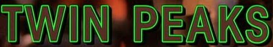
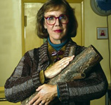

Written by Harley Peyton
Directed by David Lynch
Original Airdate: 6 October 1990

"As above, so below. The human being finds himself, or herself, in the middle. There is as much space outside the human, proportionately, as inside.
"Stars, moons, and planets remind us of protons, neutrons, and electrons. Is there a bigger being walking with all the stars within? Does our thinking affect what goes on outside us, and what goes on inside us? I think it does.
"Where does creamed corn figure into the workings of the universe? What really is creamed corn? Is it a symbol for something else?"